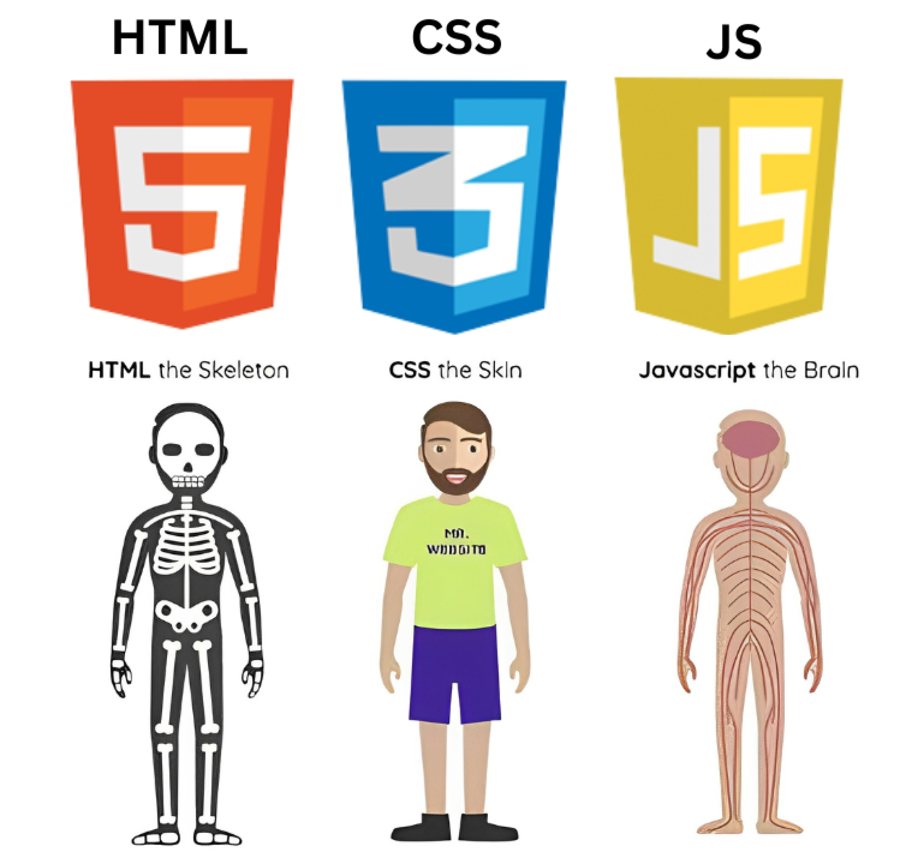

PÁGINA DE INICIO
¡Bienvenido al Portal de Laboratorios!
Esta plataforma web ha sido desarrollada para la materia de Programación Web 1, con el objetivo de demostrar la integración práctica de las tecnologías fundamentales del desarrollo Frontend: HTML5, CSS3 y JavaScript.
A través del menú de la izquierda, se puede navegar por los diferentes módulos del proyecto, los cuales incluyen el manejo de estructuras de datos, diseños geométricos con estilos puros, validación lógica de formularios y una calculadora de conversión de bases numéricas en tiempo real.
Estudiante: Mijael Josué Torrez Rodríguez
Gestión Académica: 2026
Pág 1: Fundamentos de Creación Web
1. Tecnologías Esenciales | 2. Matriz de Arquitectura Frontend | 3. Ciclo de Ejecución de Scripts
1. Tecnologías Esenciales del Ecosistema Web
Para construir aplicaciones web modernas e interactivas, se requiere la sincronización de tres pilares fundamentales que dividen la estructura, la presentación estética y el comportamiento lógico.
Estructura y Estilo Visual (HTML5 y CSS3)
- HTML5 (HyperText Markup Language): Se encarga de la maquetación semántica. Define dónde van los textos, los bloques de menú, las secciones dinámicas y los contenedores principales del sitio.
- CSS3 (Cascading Style Sheets): Controla la capa estética. Se aplica para definir paletas cromáticas, posiciones espaciales (como grids o flexbox) y transiciones animadas sin alterar el contenido nativo.
Comportamiento Dinámico (JavaScript)
- Captura los eventos del usuario en tiempo real (clics en botones, envíos de formularios).
- Procesa la información localmente mediante funciones y algoritmos matemáticos en el navegador.
- Modifica dinámicamente el documento de manera reactiva sin necesidad de recargar toda la página web.
2. Matriz de Arquitectura Frontend
Comparativa estructural de las funciones específicas que cumple cada lenguaje dentro de este proyecto de laboratorio:
| Tecnología | Rol Principal | Componente Aplicado en este Proyecto | Tipo de Procesamiento |
|---|---|---|---|
| HTML5 | Estructuración | Contenedores estructurados, formularios de entrada y tablas de datos de navegación. | Estático / Semántico |
| CSS3 | Presentación | Grid adaptativo para simular formas geométricas complejas y ocultamiento de secciones. | Renderizado Visual |
| JavaScript | Interactividad | Validación condicional de campos de texto y algoritmos de conversión de bases numéricas. | Lógico / Dinámico (Cliente) |
3. Ejecución del Cliente
El siguiente gráfico representa de manera esquemática cómo interactúan las tres tecnologías cuando el navegador interpreta los scripts y estilos cargados localmente.

Pág 2: Diseños y Estilos con CSS
NO SIN IMÁGENES - TODO CON ESTILOS GEOMÉTRICOS
Diseño 1: Bandera tricolor horizontal
Diseño 2: Bloques concéntricos de color
Diseño 3: Bandera tricolor vertical
Diseño 4: Forma circular concéntrica